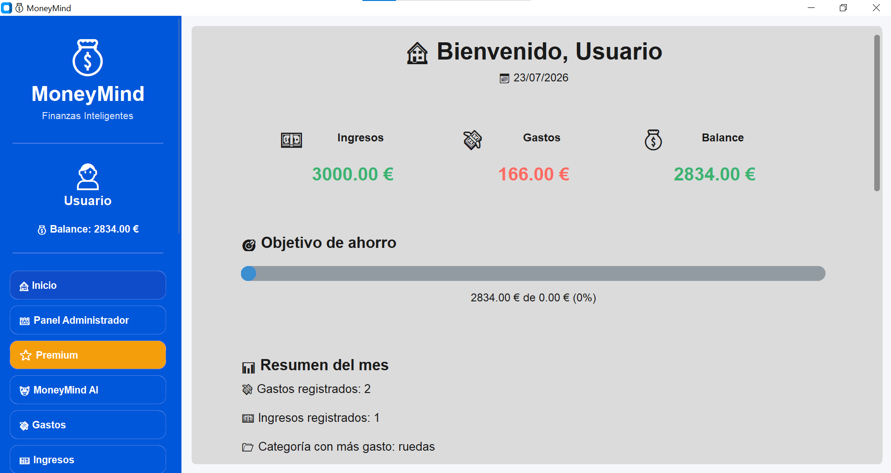
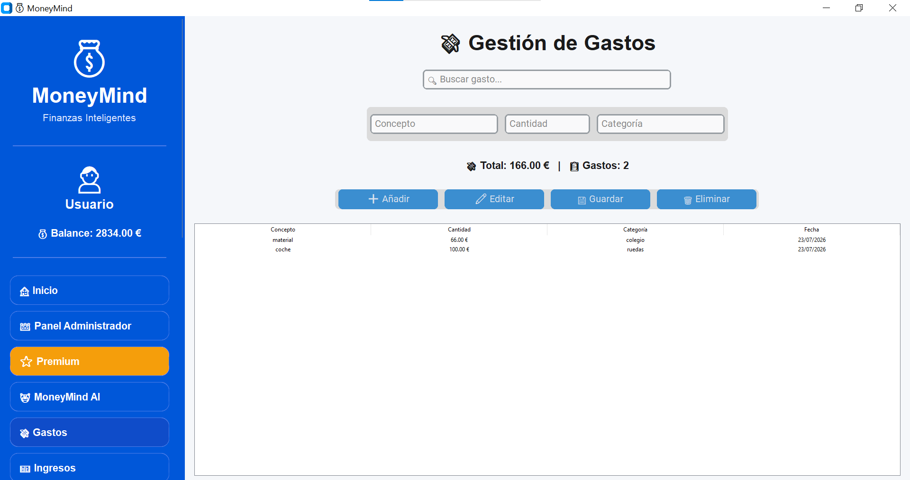
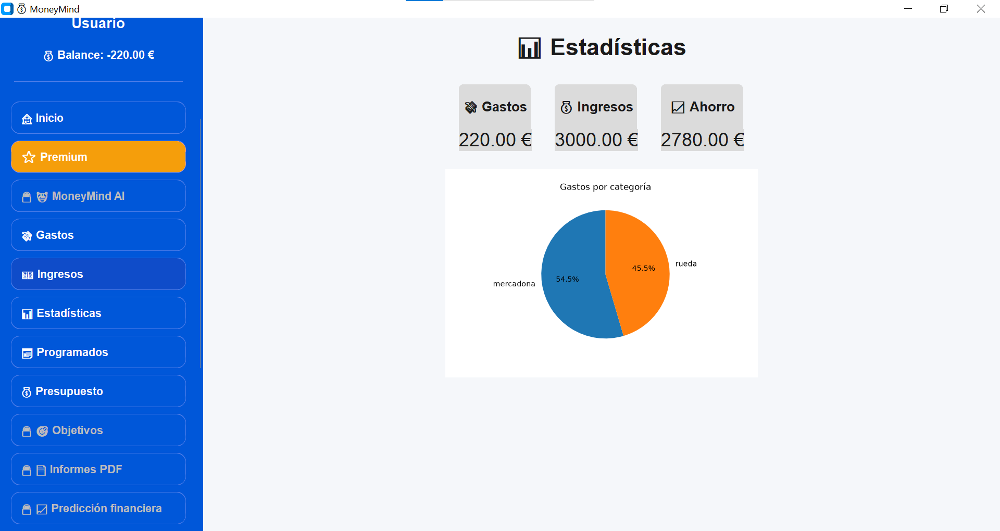
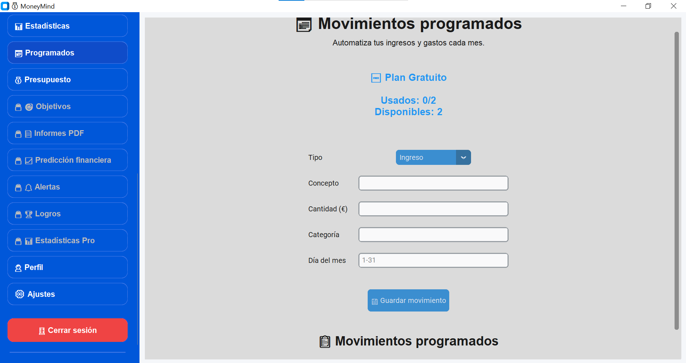
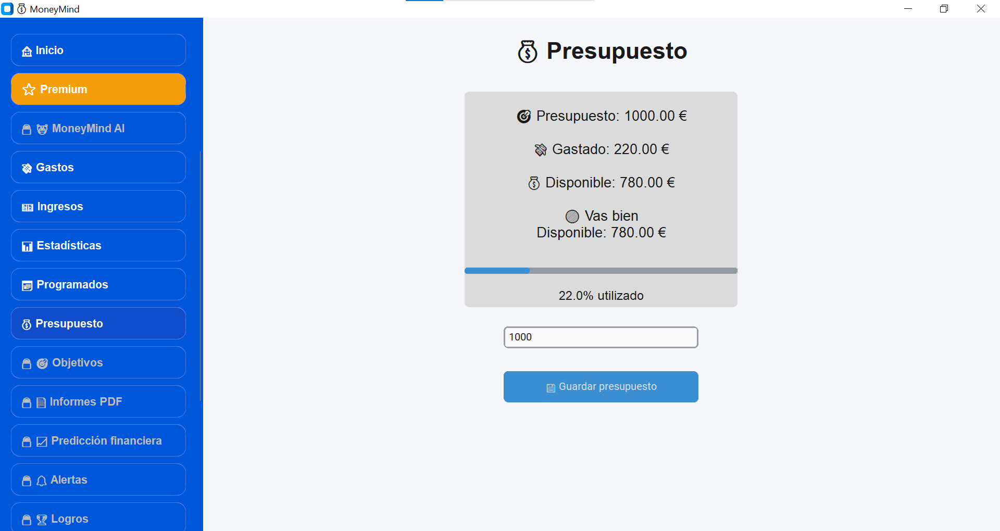
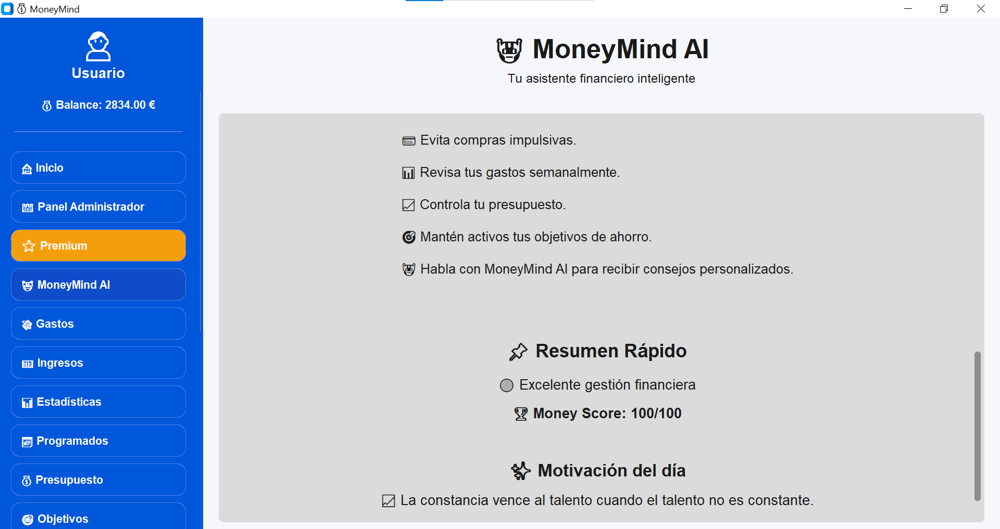
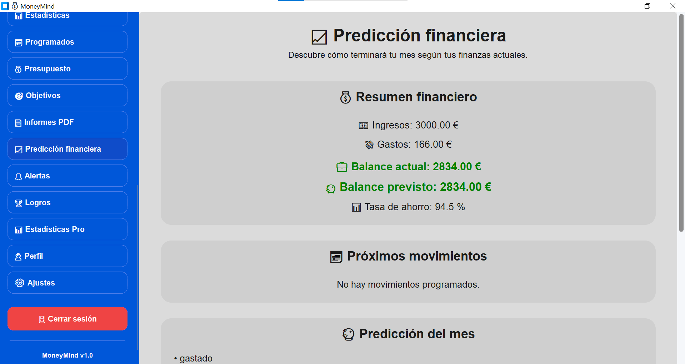

Controla cada euro.
Construye mejores hábitos financieros.
Gestiona tus gastos, ingresos, presupuestos, objetivos y estadísticas desde una aplicación creada para ayudarte a tomar mejores decisiones con tu dinero.
✓
Gastos organizados
📊
Estadísticas claras
🎯
Objetivos personalizados
24/7
Siempre disponible
Todo lo que necesitas para controlar tu dinero
Una plataforma completa para gestionar tus finanzas de forma sencilla e inteligente.
Control de gastos
Registra tus gastos, organiza categorías y descubre dónde utilizas tu dinero.
Gestión de ingresos
Controla tus ingresos y conoce tu situación financiera actual.
Estadísticas avanzadas
Analiza tus hábitos mediante gráficos y comparaciones mensuales.
Objetivos financieros
Crea metas de ahorro y controla tu progreso hasta conseguirlas.
Informes profesionales
Genera informes PDF para conocer mejor tus finanzas.
MoneyMind AI
Recibe análisis y recomendaciones inteligentes sobre tus hábitos.
Conoce MoneyMind por dentro
Descubre cómo es la aplicación antes de descargarla.

Inicio

Gastos

Estadísticas

Programados

Presupuesto

MoneyMind AI ⭐

Predicción financiera ⭐
Tu asistente financiero personal
MoneyMind AI analiza tus movimientos, detecta oportunidades de ahorro y te ayuda a tomar mejores decisiones financieras.
MoneyMind AI
"Según tus gastos actuales puedes mejorar tu ahorro mensual optimizando algunas categorías."
¿Cómo funciona MoneyMind?
Tres pasos para empezar a controlar mejor tu dinero.
Añade tus movimientos
Registra ingresos y gastos en pocos segundos.
Analiza tus finanzas
Consulta estadísticas, gráficos y evolución mensual.
Mejora tus objetivos
Ahorra de forma inteligente y consigue tus metas.
🔒 Tus datos bajo control
MoneyMind está diseñado para ayudarte a gestionar tus finanzas manteniendo el control de tu información.
Empieza a controlar tu dinero hoy
Descarga MoneyMind gratis para Windows.
Próximamente disponible en Android y Web.
Windows
Disponible actualmente
Android
Próximamente
Web
En desarrollo
Lo que buscamos conseguir
"Una forma sencilla de entender mejor mis gastos y ahorrar más."
Usuario MoneyMind
"Una herramienta pensada para mejorar la organización financiera."
Usuario MoneyMind
"Todo lo necesario para tener una visión clara del dinero."